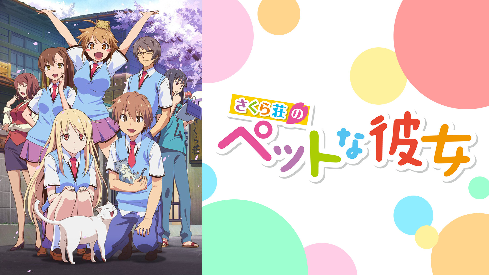

恋愛系
やはり俺の青春ラブコメはまちがっている
あらすじ
「青春とは嘘であり、悪である」
──こう書いた作文をきっかけに、「奉仕部」に入部させられた比企谷八幡。
奉仕部では、息を呑むほどの美少女・雪ノ下雪乃、クラスの上位カーストに属するギャル・由比ヶ浜結衣に出会い、ラブコメに展開──するはずが、八幡の残念な性格がそれを許さない！
八幡の高校生活、いったいどうなる!?
© 2013 渡 航、小学館／やはりこの製作委員会はまちがっている。
キャスト
比企谷八幡：江口拓也 雪ノ下雪乃：早見沙織 由比ヶ浜結衣：東山奈央 戸塚彩加：小松未可子 材木座義輝：檜山修之 比企谷小町：悠木 碧 平塚 静：柚木涼香 雪ノ下陽乃：中原麻衣 葉山隼人：近藤 隆 三浦優美子：井上麻里奈 海老名姫菜：ささきのぞみ 川崎沙希：小清水亜美 ほか
感想
”ひねくれぼっち”の主人公が繰り広げられる青春ラブコメディ
他のラブコメ主人公と違って性格がとても捻くれていてうまくいかない感じが見ていて面白く、「青春は嘘である」の一言から始まるのですが見ていた当時とても衝撃を受けました。
そんな主人公が周りの影響を受け変わっていく姿は見ていて物語に引き込まれる何かを感じました。
さくら荘のペットな彼女

あらすじ
学園の問題児の巣窟「さくら荘」に住む2年生の神田空太は、変人たちに振り回されながら、「脱・さくら荘」を誓う毎日。 そんなある日、「さくら荘」に、可愛くて清楚で、しかも世界的な天才画家である椎名ましろが越してくる。 彼女を寮の変人たちから守らねば！と考える空太だったが、ましろにはとんでもない秘密があった。 なんと彼女は外に出れば必ず道に迷い、部屋はめちゃめちゃ、ぱんつすら自分で選べないし、穿けない、生活破綻少女だったのだ！ 空太は寮生たちによってましろの”飼い主”に任命されてしまう。 こうして凡人・空太と天才少女・ましろの”飼い主とペット”生活が幕を開け・・・？
© 鴨志田一/アスキー・メディアワークス/さくら荘製作委員会
キャスト
神田空太：松岡禎丞 椎名ましろ：茅野愛衣 青山七海：中津真莉子 上井草美咲：高森奈津美 三鷹 仁：櫻井孝宏 赤坂龍之介：堀江由衣 千石千尋：豊口めぐみ メイドちゃん：堀江由衣 飯田綾乃：浅野真澄 神田優子：小倉唯
感想
自分じゃぱんつもはけない。そんな天才少女の”飼い主”の物語
名前だけ見て見るのをやめるの絶対やめてください！これは声を大にして言わせてください。
主人公が「さくら荘」の仲間と色々な出来事経験し、乗り越えていくことで成長するは見ていて応援したくなります。
笑いあり、涙ありのの名作です。ぜひ一度見てみてください。
凪のあすから
あらすじ
その昔、人間は皆、海に住んでいた。
でも、陸に憧れた人たちは海を捨てた。
海で暮らせるように海神様がくれた、
特別な羽衣を脱ぎ捨てて……。
海で暮らす人、陸で暮らす人、
住む場所が分かれ、考え方は相容れずとも、
元は同じ人間同士、わずかながらも交流は続き時は流れた。
海底にある海村で暮らす
先島光、向井戸まなか、比良平ちさき、伊佐木要と
地上に暮らす木原紡。
海と陸。
中学二年生という同じ年代を過ごしながら
今まで出会うことのなかった彼らが出会った時、
潮の満ち引きのように彼らの心も揺れ動く。
© Project-118/凪のあすから製作委員会
キャスト
先島光：花江夏樹 向井戸まなか：花澤香菜 比良平ちさき：茅野愛衣 伊佐木要：逢坂良太 木原紡：石川界人 潮留美海：小松未可子 久沼さゆ：石原夏織 先島あかり：名塚佳織 先島灯：天田益男 潮留至：間島淳司 木原勇：清川元夢 うろこ様：鳥海浩輔
感想
ちょっと不思議な世界で繰り広げられる少年少女たちの青の御伽話
「凪のあすから」以上に一言で表すことが難しい作品を私は知りません。そのくらい複雑でとても綺麗な恋愛作品です。
何より2クール目からがとても面白く、この作品は2クール目からが本番と思わせるほど世界観に引き込まれます。
そしてこのアニメは当サイトでも青春系で取り上げている「色づく世界の明日から」の監督でもある篠原俊哉監督の作品です。篠原監督の作品はどれも良作なのでおすすめです。